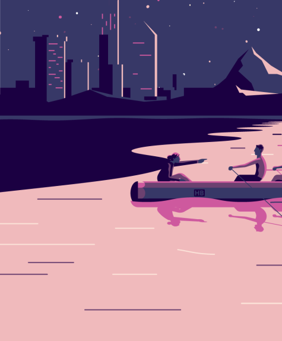

10 Reasons to Build Your Website with WP Page Builder
People’s quest for creating websites has easily taken us to a new era of site development. Where, with the availability of robust page building tools, creating websites has become a lot more fun (especially for non-developers).
BY
TOMAS LAURINAVICIUS
IN
RESOURCE
Home — Reading lists — UX Design
— 10 Reasons to Build Your Website with WP Page Builder

People’s quest for creating websites has easily taken us to a new era of site development. Where, with the availability of robust page building tools, creating websites has become a lot more fun (especially for non-developers). The multitude of tools and plugins available to you is vast when you try building websites on WordPress. Today we’ll explore a new one,WP Page Builder. If you’re tired of the same old page builder plugins, this is one you should try out.
What’s Special About WP Page Builder?
Wondering what makes WP Page Builder so special? I would say, what doesn’t? It’s developed by the team over at Themeum, who has been creating WordPress themes since 2013. As mentioned above, the plugin is a full pack of essential site building elements with all modern the modern functionality you’ve come to expect from a page builder plugin. Let’s have a look below at all of the juicy features WP Page Builder includes.

Here are some of the amazing add-ons included:
• Form: Create web forms effortlessly. It gives you a convenient way to style your forms as you desire. The Form add-on itself is capable of setting up any kind of form without needing to install any plugin. Moreover, you can manage form plugins and enable reCAPTCHA with just a simple click. There is also an add-on for Contact Form 7 if you prefer.
• Carousel: It’s hard to find an advanced add-on like a carousel in a free page builder plugin, but WP Page Builder lets you create stunning hero sliders without having to pay for it.
• Post Grid:Display blog posts in grids defining the number of posts and styling the look.
• Feature Box: Use the Feature Box add-on to display the features of products on your website.
• Acordion:Need any collapse text content on your site? Use WP Page Builder’s Accordion add-on and modify the style the way you want.



“ WP Page Builder offers a lot of ready-to-use design blocks to make your site development process a lot faster and easier “
TOMAS LAURINAVICIUS
Follow me @JohnAMWill.
You might also like...
More
BY
TOMAS LAURINAVICIUS
IN
DESSIGN PROCESS
Web page layout 101: website anatomy every designer needs to learn
User research is the reality check every project needs. Here’s our guide to why you should be doing it — and how to get started.
BY TOMAS LAURINAVICIUS IN DESSIGN PROCESS
Web page layout 101: website anatomy every designer needs to learn
User research is the reality check every project needs. Here’s our guide to why you should be doing it — and how to get started.